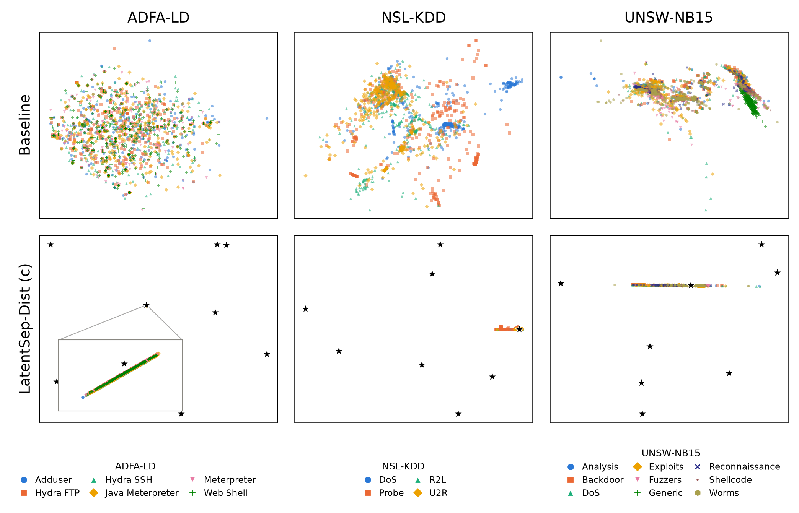

Full research manuscript · Submitted to IEEE BigData 2026
Latent Cluster Separation as a Regularizer for Lifelong Anomaly Detection
This is the actual ten-page, author-identified research manuscript. It includes the complete method, mathematical derivations, experimental tables, original six-panel latent-space diagnostic and references. Submitted to the IEEE BigData 2026 main research-paper track; acceptance has not been confirmed.
The original PDF above contains the complete manuscript, including every experiment, graph, equation, table, and reference.
Explore Figure 1Six-panel latent-space diagnostic · ADFA-LD · NSL-KDD · UNSW-NB15
Figure 1 examines latent-space representations for Baseline and LatentSep-Dist across the three security datasets. It accompanies the paper's discussion of why centroid-distance scoring can become unstable.

Open original figure at full resolution ↗